1.1 Fracciones equivalentes y fracciones irreducibles
Si en cada bus se hacen grupos de tal forma que en cada grupo haya el mismo
número de estudiantes del mismo género, en el primero se pueden constituir
cuatro grupos con seis estudiantes, en uno de los cuales solamente habrá niñas;
entretanto, en el segundo grupo se pueden hacer doce grupos con dos estudiantes
y en tres de ellos habrá solo niñas, para un total de seis niñas. Por consiguiente,
ambos buses transportan la misma cantidad de niñas.
Se denominan fracciones equivalentes aquellas fracciones que representan la
misma cantidad o parte del todo. En general, a/b = c/d si y solo si a * d = b * c.
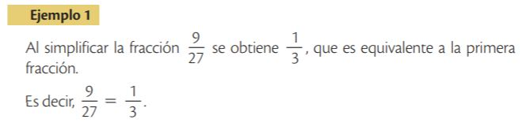
Se denominan fracciones irreducibles aquellas fracciones en las que el máximo
común divisor entre el numerador y el denominador es 1; o, de otra forma,
aquellas que están simplificadas al máximo.
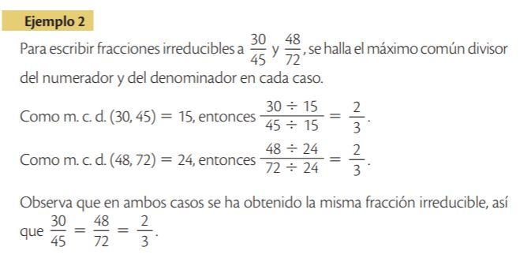
1.2 El conjunto de los números racionales
Un número racional es el conjunto de todas las fracciones equivalentes a una
dada. Se toma como representante de este número la fracción irreducible.
El conjunto de los números racionales (Q) está formado por los números de la
forma a/b , en donde a y b son números enteros y b es diferente de 0. Este conjunto
contiene a los números enteros que, a su vez, contiene a los naturales, tal como se
muestra en la Figura 2.
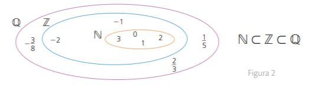
Para determinar el signo de un número racional, basta con observar los signos
del numerador y del denominador: si son iguales, el racional es positivo; si no lo
son, el racional es negativo.
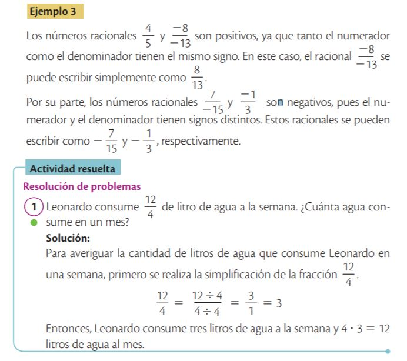
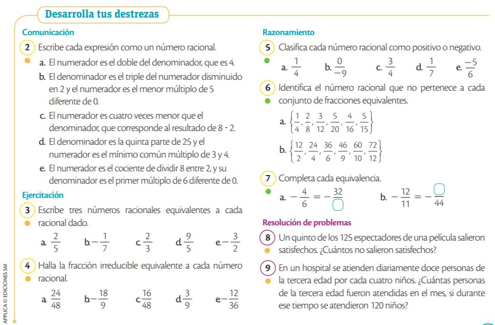
Expresión decimal de los números racionales
Al observar las cantidades que escribió la profesora, se puede ver que cada
denominador es una potencia de 10; es decir, son fracciones decimales.
Cuando se efectúan los cocientes indicados en cada caso, se obtiene 0,8 ; 0,1 y 0,013,
los cuales se conocen como decimales exactos
2.1 Números decimales exactos
Un número decimal exacto es aquel que tiene una cantidad finita de cifras
decimales y corresponden a fracciones decimales o a fracciones equivalentes a
una fracción decimal.
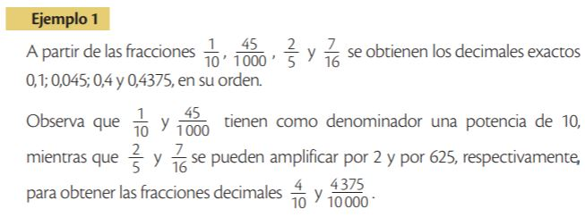
2.2 Números decimales periódicos
Un número decimal periódico es un número racional caracterizado por tener
un periodo (cifras decimales que se
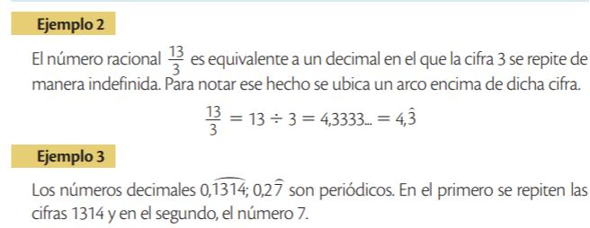
Los números decimales periódicos puros son aquellos que presentan el periodo
inmediatamente después de la coma, en tanto que en los periódicos mixtos el
periodo no aparece inmediatamente después de esta.
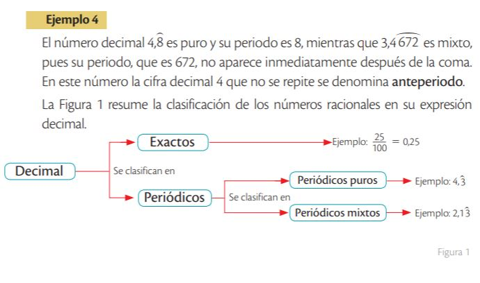
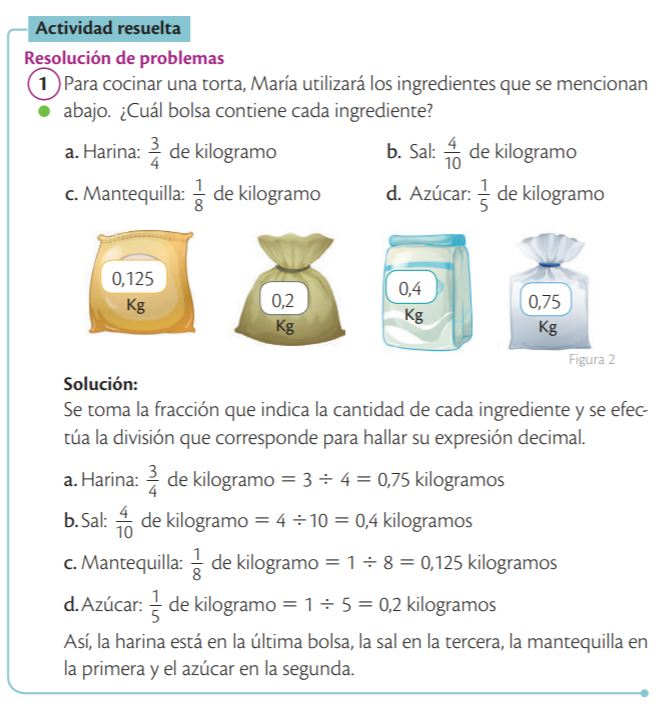
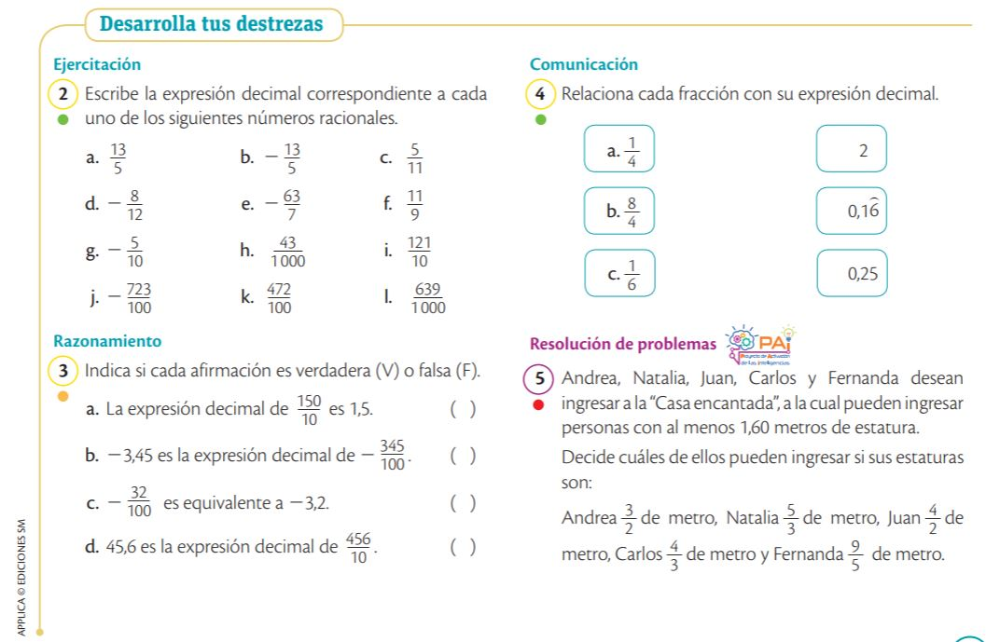
Fracción correspondiente a una expresión decimal
Si en el recipiente se vierte agua hasta la marca 0,5, se habrá ocupado la mitad
de su capacidad; así que
1/2 =
0.5
Cuando se divide 1 entre 2, se obtiene 0,5. Por tanto, se dice que la fracción 1/2 es equivalente al
número decimal 0,5.
La fracción generatriz de un número decimal es una fracción en la que al dividir el numerador entre
el denominador arroja como cociente ese número.
3.1 Fracción generatriz de una expresión decimal exacta
La fracción generatriz de un decimal exacto tiene como numerador el número sin decimales y como
denominador, la unidad seguida de tantos ceros
como cifras decimales tiene el número decimal.
Una vez obtenida la fracción generatriz, se simplifica si es posible.
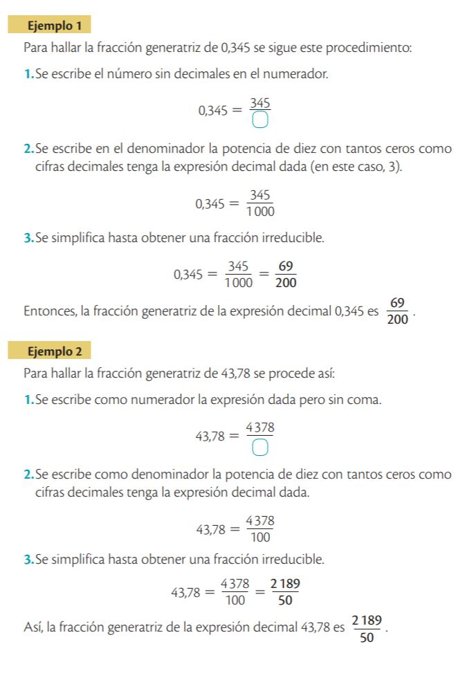
3.2 Fracción generatriz de una expresión decimal
periódica pura
La fracción generatriz de un decimal periódico puro cuya parte entera es 0,
es una fracción que tiene como numerador el mismo periodo y como denominador tantos nueves como
cifras decimales tiene el periodo.
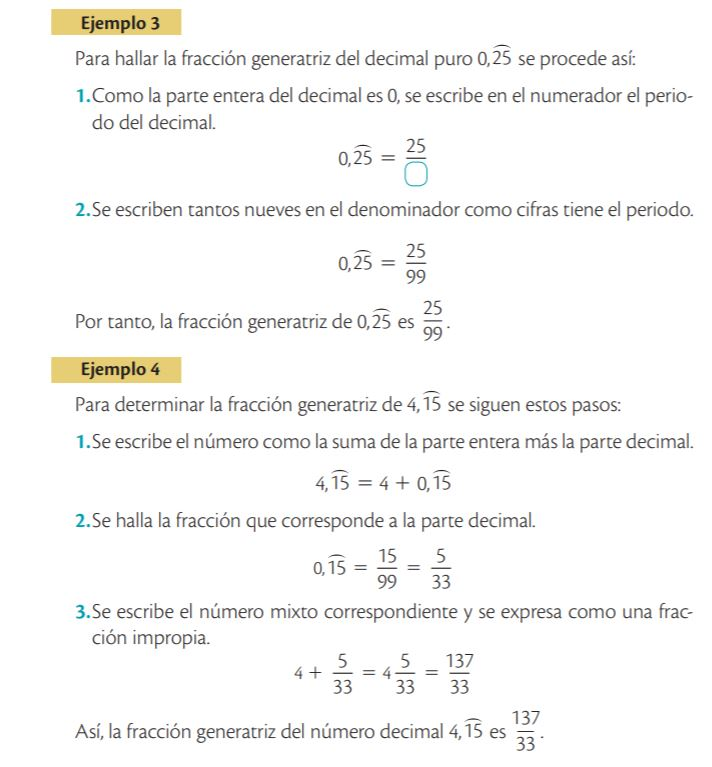
3.3 Fracción generatriz de una expresión decimal
periódica mixta
La fracción generatriz de un decimal periódico mixto tiene como numerador las cifras hasta completar
un periodo, menos las cifras hasta el anteperiodo, y como denominador tantos nueves como cifras
tenga el periodo seguidos de tantos ceros como cifras tenga el anteperiodo
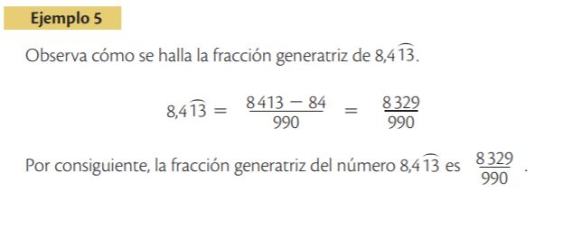
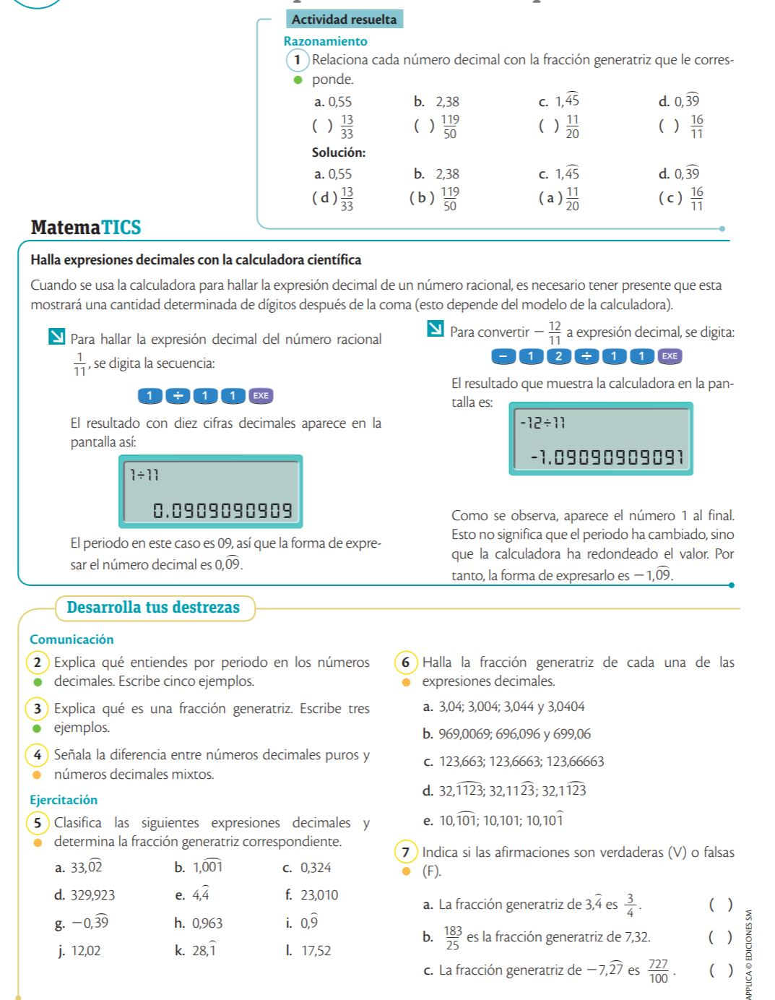
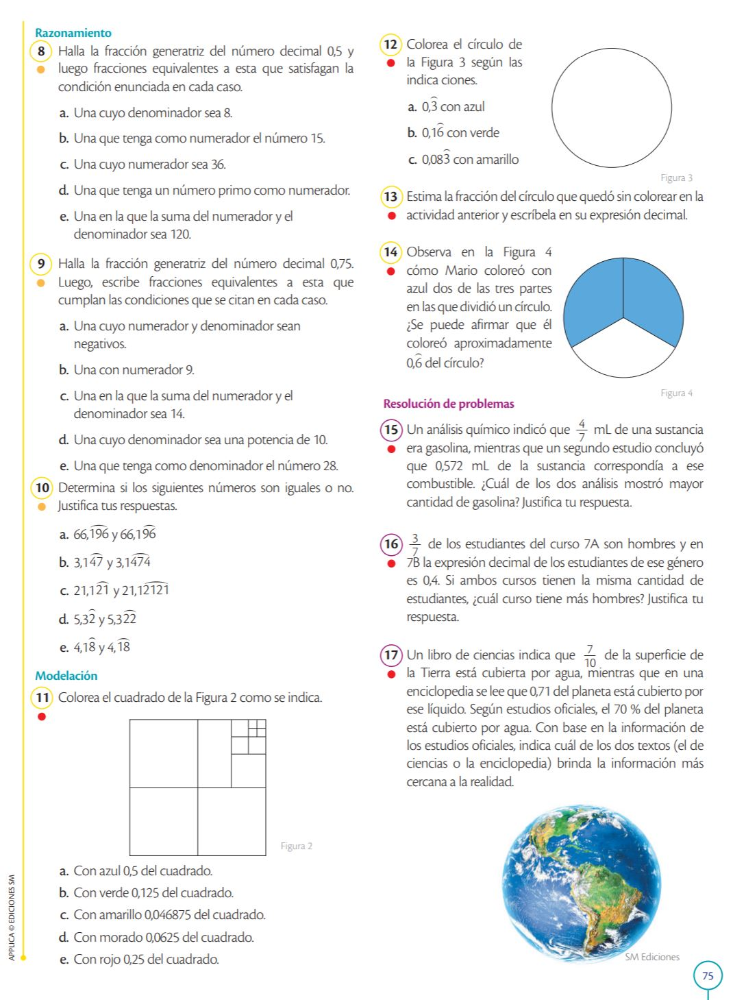
Números racionales en la recta numérica
Para representar el peso de cada costal en la recta numérica, primero se debe
expresar cada peso en fracciones con el mismo denominador.
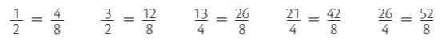
Posteriormente, se divide cada unidad de la recta según lo que indica el
denominador (ocho partes iguales) y se toman tantas partes como indique el
numerador. La representación de los pesos en la recta numérica se observa en la
Figura 2.
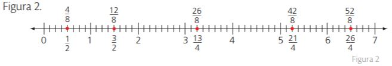
Los números racionales se ubican en la recta numérica tanto a la izquierda como
a la derecha del 0. A la derecha se hallan los racionales positivos y a la izquierda los
racionales negativos.
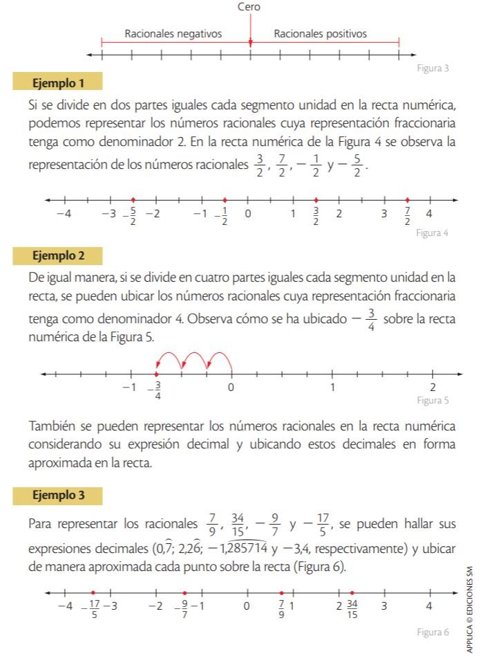
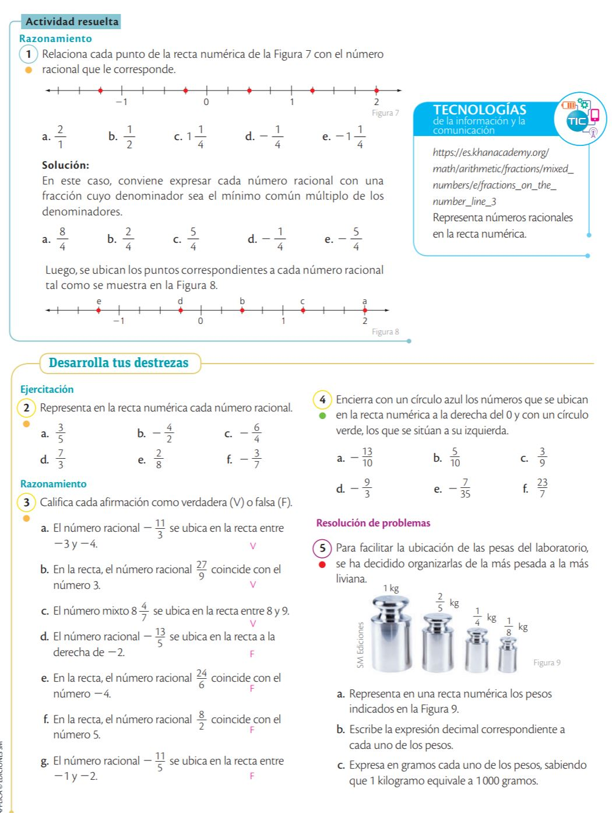
Relación de orden en los números racionales
Dados los números racionales
a/b y
c/d,
se verifica una y solo una de las siguientes relaciones:
a/b > c/d,
a/b < c/d ó
a/b = c/d.
Para comparar dos números racionales, se deben tener en cuenta varios criterios:
- Todo número racional positivo es mayor que cualquier racional negativo
- Todo número racional negativo es menor que 0.
- Si dos números racionales positivos tienen igual denominador, es menor el que
tiene menor numerador.
Por ejemplo:
3/5 <
4/5
- Si dos números racionales positivos tienen el mismo numerador, es menor el
que tiene mayor denominador.
Por ejemplo:
3/7 <
3/4
- Si dos números racionales tienen distinto denominador, se debe buscar
una fracción equivalente a cada una de las fracciones dadas, con el mismo
denominador, y compararlas teniendo en cuenta los criterios anteriores.
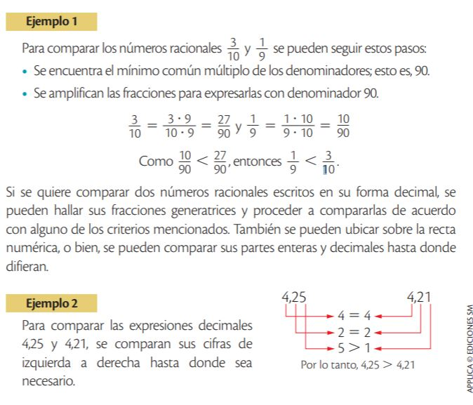
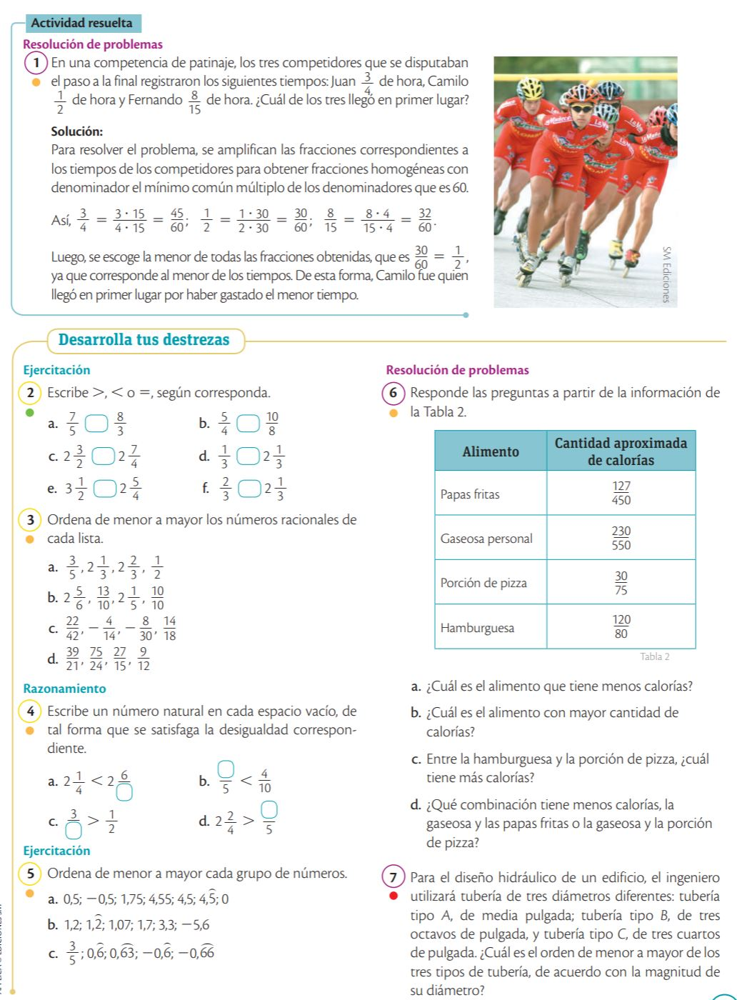